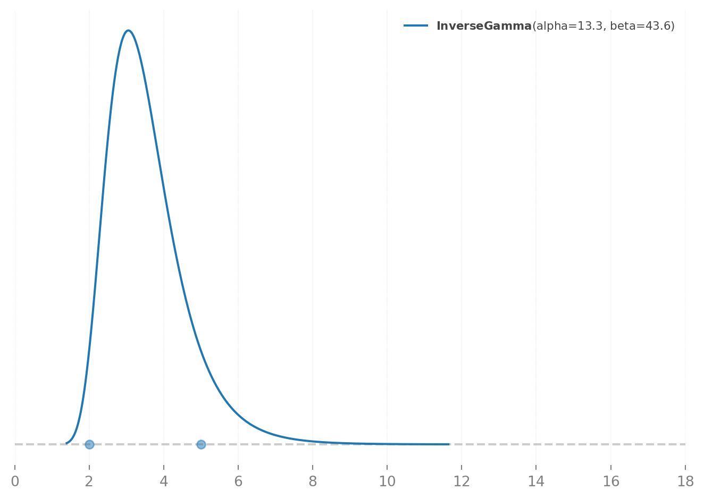
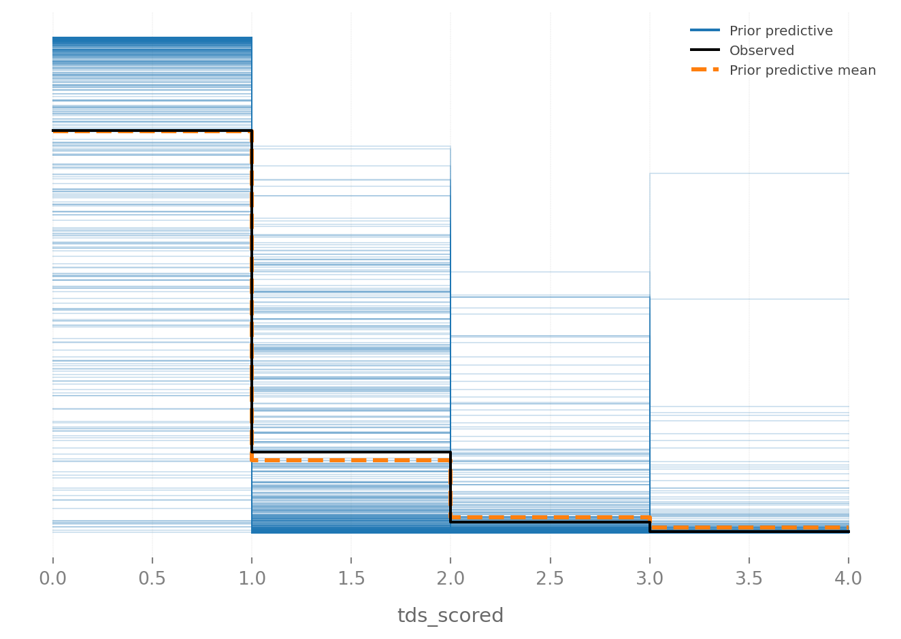
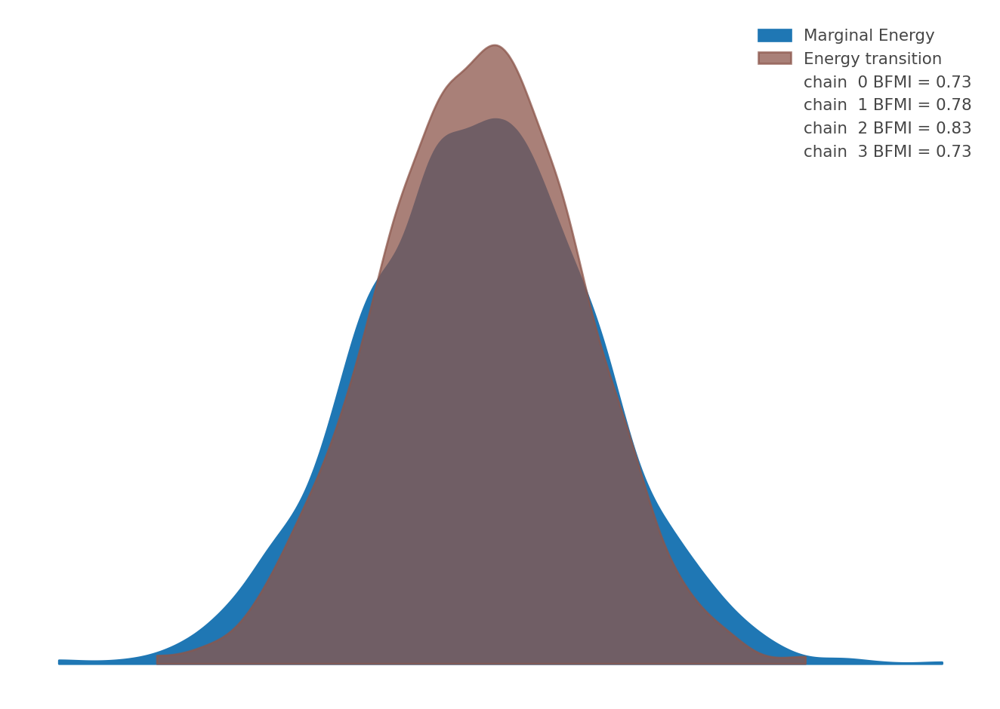
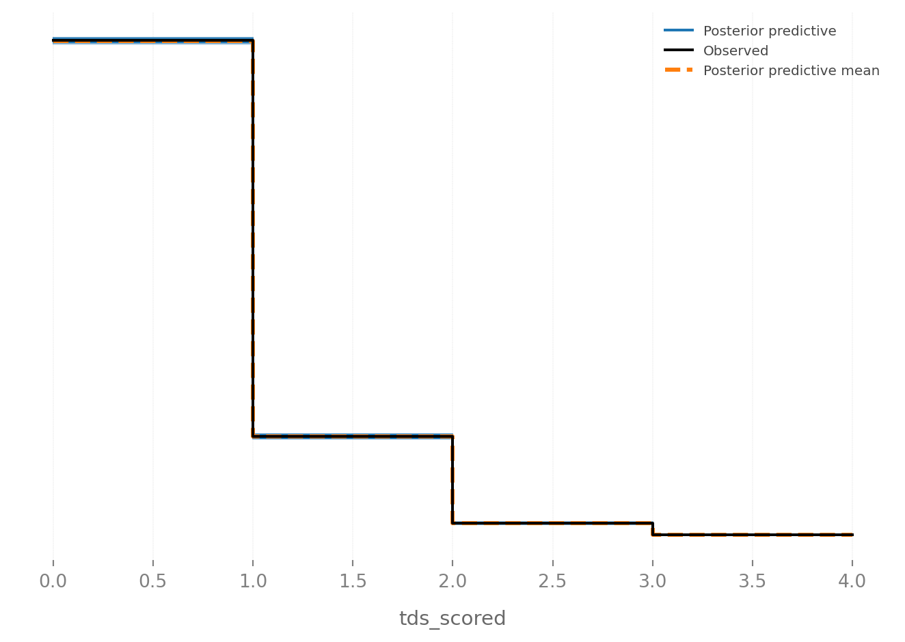
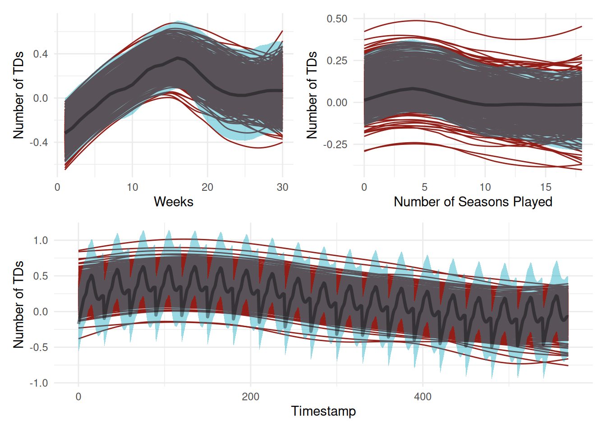
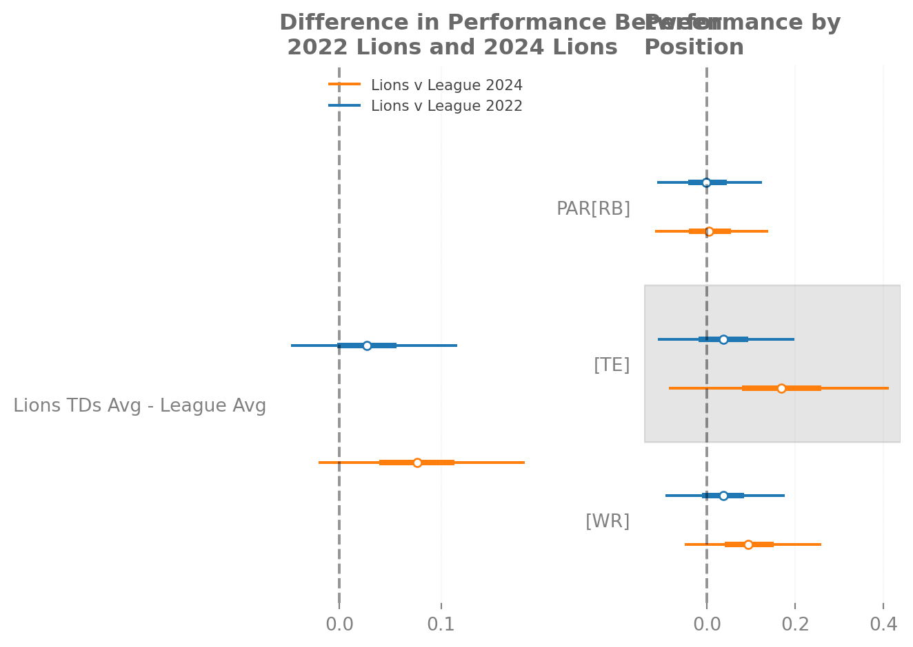
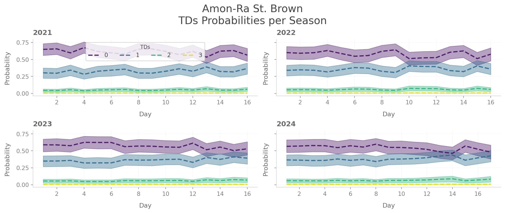
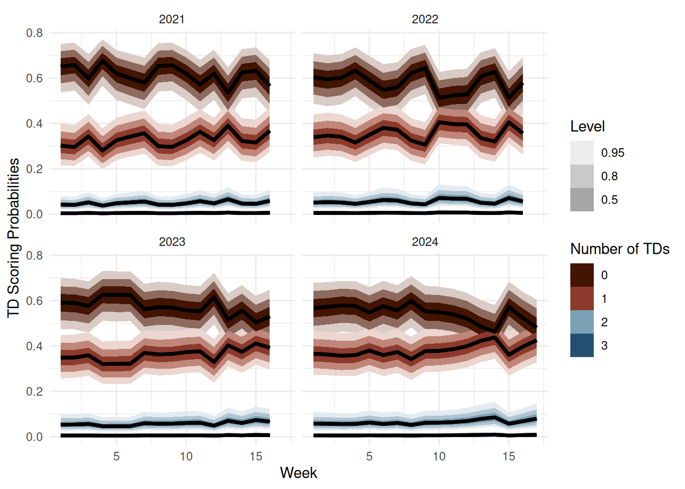

I love watching football and learning about football, with most of my working time spent listening to various NFL podcasts and the Learning Bayesian Stats podcast.1 For the last few years, I have had an inherent fascination with Bayesian stats. One of the great things about Bayesian stats is that we can talk about uncertainty in a more intuitive way, and because of the mechanics of using Bayesian models, we can get some awesome-looking plots.2 So combining these two interests would make for an interesting blog post.
I got interested in Alex Andora and Maximilian Göbel’s Soccer Factor Model.3 They extend a common model in asset pricing called the factor model to assess player skill. The general idea behind the factor model is that there are lots of macroeconomic variables that affect an asset. To assess the asset or the skill of the broker, we can assess the value of the asset or the broker by adjusting for these variables. Once we have adjusted for these variables, we can just look at the intercept and get our estimand of interest. Alex and Max extend this idea to soccer, where we are adjusting for macro-factors that affect the team. Whatever remains is attributable to a player’s individual skill. They focus on goal scoring as a measurable aspect of a player’s latent skill.
import preliz as pz import pymc as pm import matplotlib.pyplot as plt import polars as plimport pandas as pd import pytensor.tensor as ptfrom scipy.stats import normimport arviz as azimport numpy as npimport seaborn as snsimport xarray as xrimport jsonseed =sum(map(ord, "receivingyardsproject"))rng = np.random.default_rng(seed)plt.style.use('matplot-style.mplstyle')
Figure 1: Touchdowns v.s. Goals
After reading through the example notebooks and the paper, I thought that this was not only an interesting idea, but it would probably have a strong crossover with touchdowns in football. In Figure 1 I plot a comparison of receiving touchdowns in nflreadr versus goals in the author’s data. The data that are used in the goals plot are a subset of the data that they use in their Sloan analytics paper. From my very limited knowledge of Soccer most o,f these guys seem pretty good, so we are likely to see more players with one goal. Whereas in the NFL play-by-play data, we have a full accounting of every touchdown scored from 2002-2024.4
Touchdowns and Factors
Why touchdowns? Outside of being a fun exercise to see how a model designed for soccer translates to football, I think there is at least a reasonable football story for why we can use touchdowns as an outcome and why this is a useful exercise. A lot of people play fantasy football including myself, and want to know who has some scoring upside. Touchdowns in Fantasy Football act as mouthwash for fantasy scoring. I am in a Half Points per Reception league, meaning that a reception is worth 0.5 points, each receiving yard is worth 0.1 points, and a receiving touchdown is worth six points. So, for a league average receiving performance with no touchdowns, this is worth 5.77 fantasy points. A touchdown, or two, turns a baddish fantasy football performance into a relatively good one.
Outside of my pretend team, TDs could also serve to tap a pass catcher’s latent ability. To be a good pass catcher in the NFL, you have to combine being a good route runner, athleticism, and the ability to catch the ball. You could argue that being a good pass catcher becomes more difficult when a team gets closer to the endzone. If we use some real player tracking data provided by the NFL we can see some of the difficulties of being a receiver in the endzone. If we look at the person who actually catches the touchdown, there are three defenders in the area if we count the corner playing Tyreek Hill. If we turn our attention to the outlet pass (number 35 in red) there are three defenders in the area when he slips out to make himself available.
Undoubtedly, the probability of scoring increases as the offense gets closer to the endzone, but you have less room to get open. There is a pretty good case that as we start to shrink the field you have to be a crisper route runner and a good pass catcher since space is more limited. During a scramble drill you have to have a feel for where the defense is and your QB’s arm strength. If your QB is slightly off you are likely going to have to make a contested catch because everybody is a lot of closer. One small caveat is that I don’t understand all the nuances of play design and designing an offense, but you could imagine that it matters. As a play designer, you need to think about how to keep defenders where you want them. In the play above, Charcandrick West (number 35) likely has two duties. I would imagine that he is the answer if nobody is open, and he is likely tasked with occupying the linebackers so they do not sink into coverage, closing the window for number 84.
Even with an explosive play at the edge of the redzone space is still at a premium. Let’s look at this touchdown pass to Tyreek Hill where his skill as a receiver is on display. If we look at the highlight of this play the corner tries to disrupt the route by jamming Hill at the line. Hill avoids the jam and uses his speed to outrun Shields and catches the ball even with Shields right in his face. This is to say, even though there is a higher probability of scoring, your skills as a receiver are extenuated because of the tight quarters.
Obviously, we measure wide receiver production in a lot of different ways. Some of the most obvious alternative measurements are efficiency metrics like yards per route run, usage statistics like target share or targets per route run, or just modeling production whether this is receiving yards or yards after catch. In fairness to the nflreadr team they do have this data. Another potential alternative is trying to estimate separation score to measure how they are developing as a route runner. You could totally model this data using offensive personnel as one of the groups, then model your yards metric of choice. However, in my wildest dreams, I would like to use this model throughout the season to inform fantasy football decisions. The participation data that is provided is fantastic, but you must wait till the end of the season. This is likely going to be a future exercise for me.
To fit the model, I want we are going to have to leverage information we have before the game. Mainly, some measure of the receiver’s passing offense, how good the defense they are playing is, how fresh the player is, some measure of form, their aging curve, weather, and what kind of game we think it is going to be. In essence, we are adjusting for factors that are going to affect the receiver and the probability of touchdowns. The covariates I use in the model are:
A difference between the defensive team’s passing EPA and the pass catcher’s team EPA.
The rest differential between the receiver’s team and the opposition.
Air yards per pass
Weather: Mainly wind and temperature.
Total line: a combination of both teams’ projected points according to Vegas
Four binary indicators: Whether the receiver is playing a home game, whether the game is played inside, a division game, or if it is post-2018
I use the total line as a proxy for what kind of game Vegas thinks it is going to be. Effectively I am trying to tap what we think the game script is going to be going into the game. If we think it is going to be a high-scoring game, then this forces one or both teams to rely on a more run-heavy script to keep the opposing offense off the field. I include the difference between the defensive team’s passing EPA per game and the pass catcher team’s passing EPA per game. Effectively I am trying to adjust for how much better the opposing team’s defense is playing going into the matchup. I also include weather and surface as potential confounders. If it is windy and rainy and it is outdoors we are probably not going to see a ton of passes because the ball is harder to throw and catch. I also include whether it is a division game to capture a team’s familiarity with each other.
The post-2018 indicator probably deserves a little more exposition. In 2018, the NFL introduced a series of new rules, in part, to promote passing. The big change was a revision to the catch rules to try to eliminate some notably controversial calls. A catch happens when a receiver establishes themselves in bounds and performs a “football move.” Additionally, the ball is allowed to move if it is in the receiver’s control. At around 3:05 in the clip Brandon Aiyuk makes a great catch where the ball moves during the play. Before 2018 this likely would have been ruled an incomplete catch and the 49ers would have likely kicked a field goal.
To model time, I make use of Hilbert Space Gaussian Processes (HSGP). Most of the textbook definitions of a Gaussian Process (GP) start with the idea that this is a wholly uninformative name. Effectively, a Gaussian process is a collection of random variables where any finite subset has a Gaussian distribution. It is effectively just an infinite vector a.k.a a function where we are going to place a prior over. Generally, Gaussian processes are used to model time or space or both. Mathematically, this involves a lot of matrix inversion to get the posterior covariance. What this means practically is that the execution is \(O(n^3)\) to get a sense of what that means, I plotted how long it would take to fit a single Gaussian process. Game level NFL data is not necessarily all that big but there are about 2080 games in the nflreadr database, without including the play-by-play data where we are including data from just about every wide receiver to take a snap. To get around having to wait 30+ hours to fit a model we can use a lower level approximation of GP known as a HSGP. We are using an approximation of a GP where we use basis to capture the wiggliness of the function while basically converting everything from a matrix inversion to matrix multiplication which is a much faster operation.
We are interested in modeling two different time components that don’t have an obvious functional form. The first is modeling how well a player is playing in a particular season. They could be having an awesome season, and that is carrying over from game to game because they are being used more appropriately in the scheme or their usage has changed. More critically, we are interested in how experience impacts ability. In the most optimistic case you get a 21-year-old rookie into your building and in year one, they are at or above league average, but have some maturing to do with the finer aspects of being a pass catcher. By the time they get to their second contract, they may not be as fast as they were coming out of college, but they are an overall better pass catcher. Then, towards the end of their career they dip back to where they were as a rookie because they have taken a step back athletically.
This is a linearish story of receiver ability and a player’s ability in general is one that fanbases, GMs, and coaches would sign up for immediately, but it rarely ever happens. Tight End has a big jump from college to the NFL for a variety of reasons. George Kittle is a great example of the diversity of responsibilities that an elite tight end has in the NFL. Part of what makes him elite is that he is an awesome blocker who can be used at the point of attack. Sometimes this includes blocking a team’s best edge rusher, which is a difficult task for elite tackles, never mind a Tight End. To alleviate some of the difficulty, Shanahan uses a lot of motion to try and create advantageous angles and head starts. The rub is that how the motion and blocking look on a run play should look the same as when he is used on play action. As you can imagine, this is difficult, especially when you are just getting used to the size and speed of an NFL defender and the complexity of the NFL.
Travis Kelce is another great example of the difficulty of being a pass catcher in the NFL. Over the years, Kelce has built a big reputation for his improvisation in route running.5 A lot of the plays that get dialed up for him are choice routes where he can decide on what route to run based on the coverage. You can run what is known as “pause and bounce,” where the pass catcher “misses the count” where you are deliberately a tick slow. To combat under-center play, action defenses will change the picture after the snap or switch coverage. By delaying your route, you can get more information about the coverage to run your route. This takes a lot of preparation and experience to execute. This maturation process is likely not linear and is not going to have the same effect on every player. At the same time, we don’t really expect a mostly blocking tight end to suddenly catch fire as a scoring threat.
The Fun Stuff: Modeling the Data
I fit an Ordered logit for each player for each player i in game g within each season s. The rough sketch of the model takes this form. For a more detailed look at the data collection, data cleaning, and modeling files, I will point you towards the files in the script folder. The sandbox folder is really a way for me to play around the various aspects of tuning the model. \[
\begin{aligned}
\ell_{experience},\ell_{form} \sim InverseGamma(\alpha, \beta) \\
\sigma_{experience}, \sigma_{form} \sim Exponential(\lambda) \\
\beta_{factor} \sim \mathcal{N}(\mu_{factors}, \sigma_{factor}^{2}), k = 1, \ldots, p \\
\sigma_{player} \sim Exponential(1) \\
\sigma_{baseline} \sim \sqrt{\sigma^2_{player} + \frac{\sigma^2_{cutpoints}}{J}} \\
\beta_{0} ~ \mathcal{N}(0, \sigma^2_{baseline}) \\
\alpha_j = \beta_{0} + alpha_{j}^{raw}, where \sum^j_{j=1}\alpha^{raw}_i=0, \alpha^[raw]_{j} \sim \mathcal{N}(0, \sigma^2_{i}) \\
f_{experience}(s) \sim \mathcal{GP}(0, \sigma^2_{experience} \cdot K_{Matérn}(\cdot, \cdot;\ell_{experience})) \\
f_{performance}(g) \sim \mathcal{GP}(0, \sigma^2_{performance} \cdot K_{Matérn}(\cdot, \cdot;\ell_{performance})) \\
N_i = \alpha_i + f_{experience}(s_i) + f_{performance}(g_i) + \mathcal{X}^{\top}_{i}\beta \\
Touchdowns_{i} \sim \text{Ordered Logit}(N_{i}, \mathcal{c}_{i})
\end{aligned}
\]
Setting Priors
An ordered categorical likelihood seems kind of like a weird fit since we are really just using counts. However, we don’t have a ton of mass in the 3+ touchdown range. Even in the 2+ touchdown range, we are working with even less mass than the goal scoring data that Max and Alex are using. I would imagine if they included attacking midfielders then the counts would look a little more similar. We could use what I like to call “you must be this tall to ride the ride” approach, meaning we could throw out any pass catcher without enough games played or enough targets. However, we may be getting rid of some interesting comparative information when we want to go and calculate replacement-level stats.
Table 1
rec_tds_game
Total Touchdowns
0
54862
1
11057
2
1477
3
147
4
15
6
1
Additionally, while there is no technical upper bound to the number of touchdowns you could score in a game or a season there are some practical bounds on the total number of touchdowns. The current single-season record is held by Randy Moss with 23, a record that is 18 years old, which broke Jerry Rice’s single-season record of 22, which was 20. The current single-game record is a three-way tie between Kellen Winslow, Bob Shaw, and Jerry Rice, with each player having 5 receiving touchdowns in a single game. No receiver since Jerry Rice in 1990 has had 5 receiving touchdowns in a game.6
Figure 2
Instead of using the full observed range, I am just going to lump together 3 touchdowns and 4 touchdowns together. Functionally, nothing really changes because 3 touchdowns are still a relatively rare occurrence. Even when we create a simple binary indicator, we are not really changing things too much. I decided to use an ordered logit because a two or three-touchdown game is still useful for understanding how much better a pass catcher is than league average. Generally, the great pass catchers have multiple touchdown games. There are some games where a semi-random pass catcher may have a multiple TD game, but these are few and far between. Kyle Juszczyk has been an excellent receiving fullback in his career. However, he is not necessarily a major scoring threat, with only one game where he has scored multiple receiving touchdowns.
The biggest difference that I found when changing the goal scoring model to the touchdown scoring model was dealing with time. The soccer season is considerably longer than the football schedule, with 38 matchdays, while the length of the football season ranges from 14-17 games over the course of NFL games. Fitting two GPs into one season is feasible but a little bit overkill. Careers in the NFL also tend to be a bit shorter than in European high-level soccer. In general, an NFL career is 3ish years whereas the career lengths in European high-level soccer are longer because there are more avenues available to develop a player.
Technically, when you are talking about a lengthscale in general, we are talking about setting the priors over how quickly the correlations between function values decay. One of the nice things about the PyMC universe is that they have made setting the priors and hyperparameters of an HSGP more intuitive. So, while thinking about the prior for the variable may technically be a bit wrong in practice, it was helpful to do it when setting priors for the in-season HSGP and the experience HSGP.
For the in-season prior I started by thinking about how much carryover we would expect from game to game. For my mental model I found it easier to just lop off the last week of the season, since players may not be playing because of injuries or because playoff seeding is more or less set by then, so they are not playing. My intuition about how a player is playing carries over for a max of 5 or 6 games, while their performance from the last two weeks is going to tell us a bit more about how they are going to do in their next game. As the seasons evolve good to good-to-goodish teams tend to start to find answers to their problems. Mentally, I think this is kind of saying half of the season is going to tell you how a player will perform in that half of the season.

Figure 3
For the season’s GP, this was a bit more of a challenge because you don’t need to be a consistent scoring threat to be an important player in the offense. Because I am not sub-setting the data to exclude players with a certain number of targets, I end up also including some blocking TEs and Fullbacks that could probably be dropped. Intuitively, this means that we probably have some players who pull the average career length down. Partially because teams may be looking for more juice at these positions and are more likely to move on from veterans. I
I try to put the center of the distribution around 3-8 seasons. For the most part NFL careers are about 3 years long, so the first 1-3 years are probably going to be pretty informative. In general, good wide receivers get a new contract around their \(4^{th}\) or \(5^{th}\) year due to how the collective bargaining agreement works. By their second contract they are around 25-26, and the team and the league know what they are as a pass catcher.
Table 2
Average Age When Drafted
Receiver Position
Average Age
WR
22.52
RB
22.46
TE
22.79
By their third contract they are not only expensive but they are starting to decline athletically so what the first half of their may not be as informative. Players like Mike Evans, Larry Fitzgerald, and Davante Adams who relied on their route running to be dominant may have a longer tail because they can remain productive on a third contract. What this amounts to is a prior that looks like this.
(0.0, 18.0)
The next prior we need to set is how much ability varies from player to player. Admittedly this is a little bit more difficult for me to conceptualize. The difference between a league-average receiver and the best receiver in the NFL is pretty big. Where I struggled was mostly because initially I was setting it at a season level, so the difference between say WR1 and WR2 is probably closer to 2 or 3 touchdowns. However, this is being set at the game’s level so realistically, the difference is probably closer to a touchdown. So the prior level differences are going to look closer to something like this.
The variance for the HSGPs are set by really looking at the observed proportions of TDs. I set it by looking at the proportion of 2-touchdown games. So, roughly what is the proportion of two-touchdown games we would expect to observe? In the actual data, there is about a 2% chance of a player having a two-touchdown game. However, during the model-building process, I found that setting the prior at 2% or 2.1% was causing the model to struggle sampling a bit. I ended up setting the prior to 3% and that seemed to help with sampling.
Let’s check how the HSGPs are looking. Admittedly, we do get some pretty wonky-looking lines, but most of them are in the High Density intervals. It would be nice to see less wonky-looking lines from the simulations.
Let’s go and look at the implied predictions from the model. The model is a little bit more optimistic about players scoring 3 or more touchdowns than we actually observe in the real world. However, it looks like it does a pretty good job of projecting zeros and ones. This good because this is where most of the action is in the data, so I am overall pretty happy about that.
We can see that a little bit more clearly when we visualize the prior predictive distribution. The model underpredicts zero by a bit, while it gets one touchdown pretty close to dead on. Overall, I think the model looks acceptable. We could try and dial everything in a whole lot more, but that feels like playing with fire.

Diagnostics
As a good Bayesian we always need to look at whether the model sampled well. With some pretty permissive settings for our NUTS sampler we get zero divergences. That is always a good sign.
The Rhats for our HSGPs are at or really close to one, indicating that they are sampling pretty well!
index
0
basis_coeffs_season
1.004882
basis_coeffs_games
1.003772
Personally, I would have really liked everybody to be above 1,000. The sigma for the touchdown’s parameter is pretty small ESS of 519, but we are still a bit above the threshold where PyMC will yell at you.
Working with the posteriors from this model is not necessarily difficult but because there are 2265 with 1,000 draws across four chains and a few parameters that are indexed by player, this can take a while. To speed up compilation of the graphs, I do make some quick and dirty trace plots by taking a random sample of values for each variable across each chain.
For the most part these look pretty good everything looks wiggly and jumbled, which is generally a good sign for how well the sampler is doing. The slopes and HSGPs are a little less like a jumply mess. For the most part things are looking pretty good.
We can also examine how well the NUTS sampler explored the posterior distribution by plotting the energy transition against the marginal energy distribution against the energy transition distribution. In an ideal scenario these two distributions are almost indistinguishable. The energy plot below is not the worse one I have seen when building this model, but there is still some room for improvement.
az.plot_energy(idata)

Moving on if we look at the posterior predictive distribution, the model does well capturing the observed data. The posterior predictive mean is a little lower than the observed rate of 0’s and 1’s, but you kind of have to squint to be able to tell. The other encouraging sign is that all the posterior predictive draws are clustered right on or at least right near the observed values, and we are not getting some wild, implausible predictions.
Code
az.plot_ppc(idata, num_pp_samples=100)

Now when we go to look at the posteriors for the GPs we do get a few odd random draws but for the most part all three of the GPs do a good job over their respective ranges which is good!
R
Code
# this is just to please ggdistseasons_hsgp =read_parquet('writeup-dat/seasons-hsgp.parquet') |>rename(.chain = chain, .iteration = draw) |>mutate(.draw =row_number()) |>slice_sample(n =50, by = .draw)games_hsgp =read_parquet('writeup-dat/games-hsgp.parquet') |>rename(.chain = chain, .iteration = draw) |>mutate(.draw =row_number())total_hsgp =read_parquet('writeup-dat/total_hsgp.parquet') |>rename(.chain = chain, .iteration = draw)clrs =met.brewer(name ='Lakota')g =ggplot(games_hsgp, aes(x = gameday, y = f_games)) +geom_smooth(aes(group = .iteration),se =FALSE,alpha =0.3,color = clrs[3],linewidth =0.5 ) +stat_lineribbon(.width = (0.89), alpha =0.4, fill = clrs[1]) +labs(x ='Weeks', y ='Number of TDs')s =ggplot(seasons_hsgp, aes(x = seasons, y = f_season)) +geom_smooth(aes(group = .iteration),se =FALSE,alpha =0.3,color = clrs[3],linewidth =0.5 ) +stat_lineribbon(.width = (0.89), alpha =0.4, fill = clrs[1]) +labs(x ='Number of Seasons Played', y ='Number of TDs')t =ggplot(total_hsgp, aes(x = timestamp, y = x)) +geom_smooth(aes(group = .iteration),se =FALSE,alpha =0.3,color = clrs[3],linewidth =0.5 ) +stat_lineribbon(.width = (0.89), alpha =0.4, fill = clrs[1]) +labs(x ='Timestamp', y ='Number of TDs')(g + s) / t

:::
Overall, the model looks pretty good! The next avenues for exploration for modeling would be to nest players within their positions, so players are pulled closer to their position means rather than the mean of all pass catchers. I could see the argument either way that WRs are being penalized by RBs and TEs or the argument that RBs and TEs are being lifted by the WRs. Personally, I think that the estimates are probably biased downwards, where WR 2/3, TEs, and RBs are likely pulling better scoring threats downward rather than the other way around.
This has some utility if we think that we are underestimating a pass catcher’s true ability. Meaning that if our model predicts that they are better than league average, then we may be underestimating their ability by a little bit. This is nice for player evaluation because if we predict that a FB is a little bit worse of a pass catcher than we initially thought, then that’s not actually that big of a deal because we are using them as a battery ram. For a RB, than we are kind of just hoping they are a scoring threat as a runner and any additional production as a pass catcher is a nice to have.8
Posterior Estimates
Now to the fun part, plotting the data. When constructing the list of elite players, I tried to keep it simple by choosing the top 5 touchdown scorers for each position group. Then for the replacement level players, I just went with a host of players who scored 0 receiving touchdowns. I chose the 2023 season mostly because the 49ers’ offense was healthy and a juggernaut.
Due to the size of the full model I only work with subset of the posterior because GitHub has a pretty strict file size limit. I found that zarr actually works quite well when working with a model of this size, but it produces a ton of files that kind of overwhelmed my GitHub action. So I settled with writing smaller .nc files. With all the caveats aside lets look at the data.
Let’s first look at the season-level information about play above replacement. What is genuinely interesting to me is that, as a receiving scoring threat, Christian McCaffrey is mostly replaceable despite scoring 7 receiving touchdowns, which was a career high. Interestingly, we don’t have a ton of TEs that are super valuable despite a lot of LaPorta’s fantasy production coming from TDs in his rookie season. Interestingly, the RBs all have their Performance Above replacement, like right on the line. I think that this may just be telling us that as pass catchers, there probably isn’t a ton of additional value.
What happens when we disregard the season-specific parameter? We do see some big jumps in value for almost everybody! This definitely makes more sense since Christian McCaffrey is generally regarded as a really good pass catcher, but especially at his position. Sam LaPorta has a bit more volatility than Hunter Henry and George Kittle, since, in the data, he is only a 2nd year player, so we just have less information about him.
Perhaps potentially one of the most interesting non-49ers comparison to make would be to look a the evolution of the Lion’s offense over Dan Campbell’s tenure as head coach. For a clean comparison, we are just going to use the 2022 Lions since Ben Johnson started his tenure as offensive coordinator that year. Over his tenure as offensive coordinator, the Lions went from a plucky team doing interesting things to one of the league’s best offenses.
To do this we are just going to take the posterior contrasts. I am particularly interested in two comparisons. The first is just how much better the offense is overall due to the maturation of Ben Johnson as a play caller and due to their investments into the offense. The Lions invested a fair amount of draft capital in the offense, 4 picks in the top 100 from 2021 to 2024. The second is looking at where the offense is getting more juice. My suspicion is just that part of the story is that they are just getting more juice from the RBs and maybe a touch more juice from the TE.
Code
players_2022 = cumulative_stats.filter( (pl.col('posteam') =='DET') & (pl.col('season') ==2022)).select( pl.col('receiver_full_name').unique())['receiver_full_name'].to_list()players_2024 = cumulative_stats.filter( (pl.col('posteam') =='DET') & (pl.col('season') ==2024)).select( pl.col('receiver_full_name').unique())['receiver_full_name'].to_list()perf_2022 = post_preds['tds_scored'].where( ( (post_preds['receiver_full_name'].isin(players_2022))& (post_preds['season'] ==2022) ), drop =True)perf_2024 = post_preds['tds_scored'].where( ( (post_preds['receiver_full_name'].isin(players_2024))& (post_preds['season'] ==2024) ), drop =True)league_2022 = post_preds['tds_scored'].where( ( (post_preds['season'] ==2022) & (~post_preds['receiver_full_name'].isin(players_2022)) ), drop =True)league_2024 = post_preds['tds_scored'].where( ( (post_preds['season'] ==2024) & (~post_preds['receiver_full_name'].isin(players_2024)) ), drop =True)team_avg_2022 = perf_2022.mean('obs_id')team_avg_2024 = perf_2024.mean('obs_id')league_avg_2022 = league_2022.mean("obs_id")league_avg_2024 = league_2024.mean('obs_id')league_pos_avg_2022 = league_2022.groupby(["receiver_position"]).mean('obs_id') league_pos_avg_2024 = league_2022.groupby(['receiver_position']).mean('obs_id')lions_pos_avg_2022 = perf_2022.groupby(["receiver_position"]).mean('obs_id')lions_pos_avg_2024 = perf_2024.groupby(['receiver_position']).mean("obs_id")pos_contrast_2022 = (lions_pos_avg_2022 - league_pos_avg_2022).rename('PAR')pos_contrast_2024 = (lions_pos_avg_2024 - league_pos_avg_2024).rename('PAR')Lions_League_2022 = (team_avg_2022 - league_avg_2022).rename('Lions TDs Avg - League Avg')Lions_League_2024 = (team_avg_2024 - league_avg_2024).rename('Lions TDs Avg - League Avg')_,(right, left) = plt.subplots(1,2)az.plot_forest([Lions_League_2022, Lions_League_2024], model_names = ['Lions v League 2022', 'Lions v League 2024'], combined =True, ax = right)az.plot_forest([pos_contrast_2022, pos_contrast_2024], model_names = ['Lions v League 2022', 'Lions v League 2024'], combined =True, ax = left )right.set( title ='Difference in Performance Between \n 2022 Lions and 2024 Lions')left.set( title ='Performance by Position')right.axvline(c ='k', ls ='--', alpha =0.4)left.axvline(c ='k', ls ='--', alpha =0.4)left.get_legend().remove()

It is clear that the Lion’s offense got better from Ben Johnson’s first year as a play caller to his last year as a play caller in Detroit. When we break down the differences by position, we see some interesting trends. Both the WRs and TEs improve between 2022 and 2024 if only slightly. Interestingly, the RB position is kind of the same. This is a bit puzzling, as Jahmyr Gibbs is a pretty good pass catcher as a running back.
I guess that the part of the reason we see improvements for the pass catchers is not only due to maturation of Amon-Ra St. Brown and upgrades at WR and TE.9 Part of this improvement is likely due to how well the Lions run the ball. Part of their success running the ball is that their pass catchers are good to excellent blockers, and their O-Line is good. What this means is that they are able to run and pass the ball out of the same formations. This puts a lot of stress on a defense as Linebackers and Safeties are forced to either come forward to defend the run or the defense puts bigger bodies on the field to defend the run. This opens up opportunities in the passing games to hit explosive plays or take additional defenders in the red zone, so other pass catchers can get open.
If we want to see the evolution of a pass catcher’s ability, we can just plot the probabilities over the number of games they played for each season. What we see is that the probability that Amon-Ra scores a touchdown or doesn’t score a touchdown starts to be in the same neighborhood. Which is crazy! This speaks to not only his maturation as a pass catcher, but also the maturation of the system that he is in.
# this looks pretty gross so I am just going to do this in ggplotplayer ="Amon-Ra St. Brown"just_amon_ra = cumulative_stats_pd[cumulative_stats_pd['receiver_full_name'] == player]amon_ra_coords = xr.Coordinates.from_pandas_multiindex( just_amon_ra.set_index( ["receiver_full_name","number_of_seasons_played","games_played","season","receiver_position" ] ).index,"obs_id",)player_probs_post = xr.open_dataarray('amon-ra-probs.nc').assign_coords(amon_ra_coords)colors = plt.cm.viridis(np.linspace(0.05, 0.95, 4))cols =2unique_seasons = np.unique(player_probs_post.season)num_seasons =len(unique_seasons)rows = (num_seasons + cols -1) // colsfig, axes = plt.subplots( rows, cols, figsize=(12, 2.5* rows), layout="constrained", sharey=True)axes = axes.flatten()player_probs_post_df = player_probs_post.to_dataframe()for season, (i, ax) inzip(unique_seasons, enumerate(axes)): dates = player_probs_post.sel(season=season)["games_played"] y_plot = player_probs_post.sel(season=season)for event in player_probs_post.event.to_numpy(): az.plot_hdi( x=dates, y=y_plot.sel(event=event), hdi_prob=0.89, color=colors[event], fill_kwargs={"alpha": 0.4}, ax=ax, smooth=False, ) ax.plot( dates, y_plot.sel(event=event).mean(("chain", "draw")), lw=2, ls="--", label=f"{event}", color=colors[event], alpha=0.9, ) ax.set(xlabel="Day", ylabel="Probability", title=f"{season}") sns.despine()if i ==0: ax.legend(fontsize=10, frameon=True, title="TDs", ncols=4)# remove any unused subplotsfor j inrange(i +1, len(axes)): fig.delaxes(axes[j])plt.suptitle(f"{player.title()}\nTDs Probabilities per Season", fontsize=18)# df = pl.from_dataframe(implied_probs.to_dataframe())### df.write_parquet('writeup-dat/implied_probs.parquet')#

Code
implied_probs_data =open_dataset('implied-probs') amon_ra = implied_probs_data |>filter(receiver_full_name =='Amon-Ra St. Brown') |>collect() |>mutate(.draw =row_number(), n_tds =as.factor(event)) ggplot(amon_ra, aes(x = games_played, y = tds_scored_probs, fill = n_tds)) +stat_lineribbon(aes(fill_ramp =after_stat(level))) +scale_fill_met_d(name ='Troy') +facet_wrap(vars(season)) +labs(y ='TD Scoring Probabilities',fill ='Number of TDs',x ='Week',fill_ramp ='Level' )

One of the downsides the nflreadr data is that we do not have prime Jerry Rice in there. They do have his last 2 years as a Niner and his time as a Raider and Seahawk in there, but he was in years 14 to 19. Compared to prime Jerry Rice he had declined significantly, with his last double-digit touchdown season coming during the 1995 season. So instead, we will just look at some of the most dominant pass catchers in NFL from 2002-2024 and some of their younger contemporaries.
Players kind towards the end of their careers and at the beginning get short changed a bit but it is pretty to cool to see just how good some of these guys are. It is crazy to think that for some players that by the act of showing up they are pretty likely to score a touchdown! What is interesting is that for good pass-catching backs generally just increase their probability to about 25%. Which seems small but you are getting a touch more juice from a fantasy RB spot if they catch a touchdown and rush for a touchdown.
If there are a group of players that you are interested I have uploaded the implied probabilities data for each season to my Github releases. You can use these helper functions to read in the data if need be!
As a disclaimer, I am a huge 49ers fan, so a lot of examples will be 49ers-centric.↩︎
For fun, I just try to do things in both matplotlib and ggplot2. I personally prefer working with posteriors in ggplot2 because ggdist has a lot of great uncertainty features and produces less busy plots.↩︎
I am American, so I will just call it Soccer and call American Football Football.↩︎
Technically, the play-by-play data goes from 1999-2024 but some of the data that are used for building the model are missing. Therefore I elect to use the 2002-2024 seasons.↩︎
Thanks to the from_dataframe feature in polars getting the data to plot in ggplot was a cinch.↩︎
It would be interesting to see if there is a viable RDD for RBs on screens since the pass air yards on the pass is probably clustered in and around -1 to 1 air yards.↩︎
This is not a slight to T.J. Hockenson, who is an excellent TE.↩︎